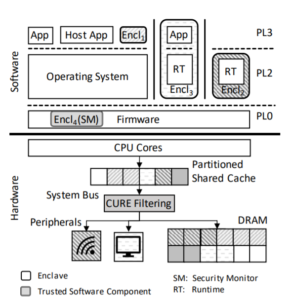
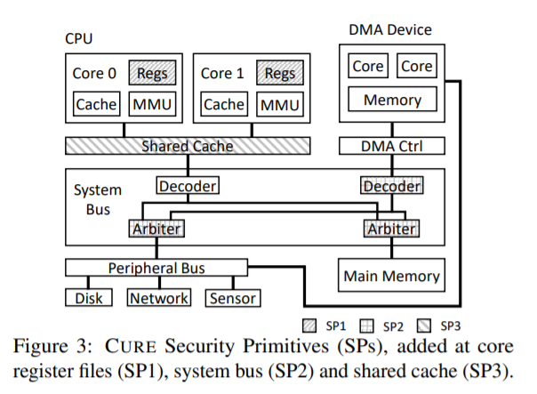
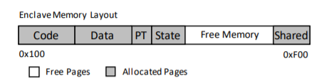
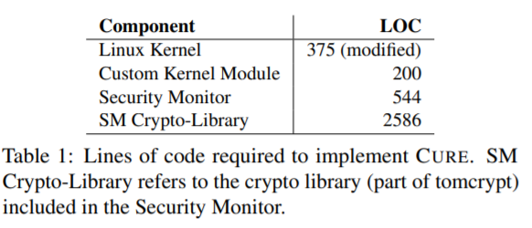
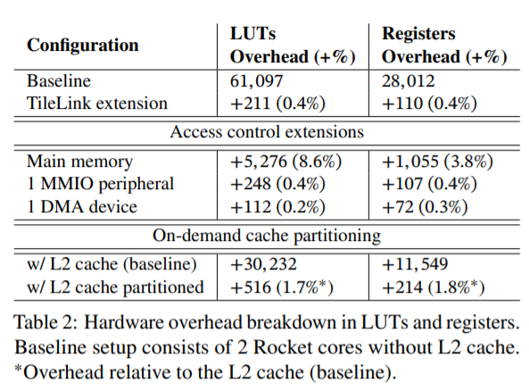
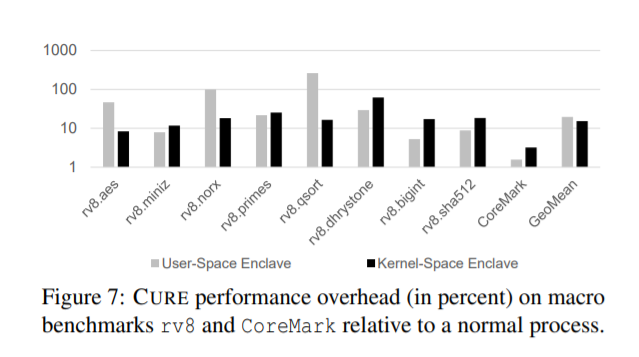
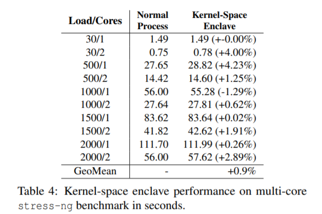

Paper Reading: A Security Architecture with CUstimizable and Resilient Enclaves
本篇论文是达姆城工业大学的教授 Ahmad Sadeghi 和他的学生发表的 TEE 相关的论文。论文主要是介绍并实现了一个新型的 TEE，支持多种类型的Enclave，对外设的的访问控制，并针对侧信道攻击进行了防护。
Introduction
TEE (Trusted Execution Environment) 可以提供强有力的隔离可信执行环境 —— enclave。但是现有的 TEE 解决方案有许多设计上的不足：
- 现有的 TEE 都仅提供了一种 “通用” enclave 类型。比如 SGX 仅仅提供了 user-space enclave，内核态无法使用 enclave，ARM TrustZone 提供了 secure world 和 normal world，secure world 内可以运行一个 small kernel，但是问题是 TrustZone 只有这一个 enclave，如果要为用户态提供 enclave，需要自己扩展。（enclave 类型少）
- 对新兴的应用支持度不够，比如对 Machine Learning as a Service 这种需要使用外设/多核算力的程序来说，现有的 TEE 支持都不好。（外设/多核支持度差）
- 普遍无法防御 side-channel attacks，即使有防御手段也是亡羊补牢的解决方案。（侧信道攻击防御差）
针对以上问题，本篇论文的作者提出了一个新型的 TEE 架构 —— CURE，CURE 相比现有的 TEE，解决了以上的不足，主要的特性有以下几点：
- 支持多种类型的 enclave： user-space enclave、kernel-space enclave、sub-space enclave
- 支持 enclave 和外设等资源的绑定
- 针对侧信道攻击进行了防御，在 shared-cache 上提供了按需的 way-based cache 隔离，而在 core-exclusive cache 也做了一定的防御
CURE Architecture
我们先来组略的看一下 CURE 的架构。
正如下图所示，CURE 共有三个特权级 —— PL0, PL2, PL3（当然这只是 CURE 架构的一种实现而已，可以根据不同的体系结构进行更改）。这里值得注意的是，在 PL0 特权级运行了 Firmware，并且这个 Firmware 中的一部分是 SM（Secure Monitor），而这个 Secure Monitor 运行在 enclave 中。SM 是 CURE 中非常重要的角色，是绝对不可以被攻陷的组件。正如 Secure Monitor 这个名字指示的一样，SM 的任务主要是监控管理所有的 enclave，enclave 安装、启动、运行、关闭都离不开它。

那么 SM 在 enclave 的安装、启动、运行、关闭中担当的任务有哪些呢？
enclave 安装
enclave 的安装和大多数 TEE 类似，SM 会检查 enclave 的完整性，如果验证成功，SM 会为该 enclave 创建一个 元数据结构 $D_{encl}$ ，$D_{encl}$ 主要包含以下几个内容：
- $L_{encl}$ —— enclave 的 label，全局唯一，由 service provider （发布这个 enclave 的人）提供
- $Sig_{encl}$ —— service provider 提供的 enclave 签名，用来校验完整性
- $Cert_p$ —— service provider 的公钥证书，用于检查 service provider 的身份
- $S_{encl}$ —— enclave state structure，包含该 enclave 的所有敏感数据，用来持久化
- $K_{encl}$ —— 加密 $S_{encl}$ 的密钥
- counter —— 用来防止 rollback
$D_{encl}$ 以及一些其它的信息会存放在 $S_{sm}$ 中，$S_{sm}$ 记录 SM 的相关状态信息。
enclave 启动和关闭
启动
enclave 的启动总是由 host app 来触发。然后 OS 从持久化存储设备上加载 enclave 和 配置文件，随后 OS 会跳转到 SM，将执行权交给 SM。
SM 会首先检查 enclave 和配置文件的完整性，随后会根据配置文件的需求给 enclave 配置硬件来分配一段或多段连续的物理内存区域。
随后，SM 会根据配置文件分配其他的系统资源，比如 cache，外设等等。这些也是通过配置硬件来实现的。
所有给 enclave 分配的资源都会记录在 $D_{encl}$ 中。此外，SM 会为这个新启动的 enclave 分配一个唯一的 ID，这个 ID 在所有正存活的 enclave 中唯一。这个 ID 在 enclave 隔离中的作用非常重要。
最后，SM 会从存储设备中 $S_{encl}$， 并检查 $S_{encl}$ 中的 counter 和 $D_{encl}$ 中的 counter 是否一致。这一步主要的目的是防止 rollback attack。
总结起来，enclave 的启动过程大致如下图所示：

在启动配置 enclave 的时候，SM 是不会被中断的，这个可以通过配置关闭其他所有的 CPU 的中断来实现。此外，hyperthreading 在 CURE 中是关闭的，否则可能会导致部分共享资源的泄露。
SM 在启动 enclave 的时候，会配置 enclave 的所有 中断都转发到 SM，这样 SM 就完全控制了 enclave 的上下文切换。
在 enclave 启动过程中，有几点值得注意
- 有很多地方都需要 SM 来配置硬件，那么应该如何配置呢？ 配置硬件的目的又是什么？
- SM 为每一个存活的 enclave 都分配了一个 ID，这个 ID 起到了什么作用？
关闭
enclave 的卸载比较简单，SM 首先将 $S_{encl}$ 和 $ D_{encl}$ 中的 counter 加1，然后将 enclave 的状态 $S_{encl}$ 保存起来（加密）
enclave 执行
enclave 执行时，大多数情况下和普通程序没有什么区别，但是一旦有 中断/异常 等需要进行上下文切换时，SM 就会拦截并进行一些检查。
此外，enclave 在进行上下文切换，启动和关闭时， SM 会强制 flush 所有 core-exclusive cache，也就是 L1 icache 及 L1 dcache（如果 L2-cache 也是 core-exclusive，也需要刷新）。这样做的目的是防止新切换的程序（无论是 enclave 还是 host app）窃取 cache 中的一些信息。那么，为什么 LLC (Last Level Cache) 不需要刷新呢？
enclave 的三种类型
CURE 中主要有三种类型的 enclave。正如图1所示，其中 $Encl_1$ 是 user-space enclave; $Encl_2, Encl_3$ 则是 kernel-space enclave；$Encl_4$ 是 sub-space enclave。
user-space enclave
user-space enclave 运行在用户态，和普通程序一样，user-space enclave 依赖 OS 进行内存管理，异常中断处理，调度。
此外，为了防止类似 controller side-channel attack 的侧信道攻击，user-space enclave 将 page table 放在 enclave memory 中，以防止被攻击者观察。
那么问题来了，page table 在 enclave memory 中，OS 如何做内存管理呢？
kernel-space enclave
kernel-space enclave 运行在内核态，也可以包含用户态的部分。由于运行在内核态，所以 kernel-space enclave 可以不依赖 OS 提供的服务，而采用自己定义的 RunTime 接口，这样更加安全，但同时也增加了 enclave 的大小。
sub-space enclave
sub-space enclave 允许将一个特权级内的软件的部分构建成 enclave （这里我总有点不太理解，和普通的切分程序来划分 可信/不可信 部分有什么区别呢）。 sub-space enclave 最有用的地方在于可以在最高特权级构建一个绝对可信的 TCB，并且降低 TCB。比如，在 CURE 中，SM 就是这样一个 sub-space enclave。
CURE 硬件配置
在前面的介绍中，有很多细节问题没有解释清楚，比如 enclave id 有什么用；如何配置硬件；enclave 的内存管理究竟如何做到；资源隔离又是如何保证的等等，下面将会一一进行解答

enclave id
eid 是 CURE 中用来代表 enclave 运行上下文的标识。在 CURE 的设计中，eid 存储在每一个 CPU 核上的寄存器中，而这个 eid register 中的值就表示了当前这个核上正在运行的 enclave 是谁。在每一次 enclave 启动/关闭/上下文切换时，eid register 都会重新设置。
此外，eid 主要用来做访问控制，eid 会附加在 bus transaction 中。
在 CURE 实现中， 一个 eid 4 bit，一共有 16个 ID，并且 OS 的 ID 为 0，SM 的 ID 为 0xF，Firmware 的 ID 为 0xE。
memory isolation
enclave 的 memory 是由 SM 分配的连续物理内存，每当 CPU 发出内存请求时，main memory 的 arbiter 就会通过 bus transaction 中的 eid 和 添加在 arbiter 的寄存器来判断是否有权限访问。添加在 arbiter 的寄存器主要用来存放 enclave 对应的内存区域，假设一共有 16 个enclave，每个enclave 有一段 物理内存，那么就有 16 个寄存器。
在 CURE 的实现中，一个 enclave 分配一段连续的物理内存，内存的布局如下图所示。

page table 是放在 enclave memory 中的。在 enclave 启动时，OS 像创建普通进程一样创建页表，不同的是，OS 会将所有的内存都映射好，而不使用 demand paging；随后，OS 将 page table 传给 SM，SM将其拷贝至 enclave memory中，并修改 OS 的 satp 寄存器 (页表基地址寄存器)。此后，OS 不可以再修改页表，因为所有对页表的访问都会被 main memory arbiter 拦截。当需要分配新的内存时，会触发 page fault，OS 会将执行权交给 SM。
peripheral binding
在 CURE 中，CPU访问外设时，bus transaction 也会携带 eid 信息，和内存隔离相似，在 外设 的 arbiter 也需要检查当前正在运行的 enclave 是否有权限访问这个外设对应的 MMIO 区域。
在 CURE 的实现中， 每个外设都添加了两个寄存器，一个表示这个外设的 MMIO 区域，另一个则表示了每一个 enclave 的读写权限。
DMA protection
CURE 在每个 DMA 设备的 decoder 前都添加了寄存器，这些寄存器定义了 DMA 设备可以访问的内存区域。
cache protection
针对 core-exclusive cache，由于 CURE 在每一个 enclave 上下文切换/启动/关闭 都会刷新，因此攻击面不大。因此，在 CURE 中，作者们只做了一种基本的检查。作者们扩展了每个 cache entry，增加了 4-bit 的 line-eid，表示这个 cache line 所属于的 enclave， 每个enclave 只允许访问属于他的 cache line。
而针对 shared-cache，CURE 使用了一种 on-demand way-based partition 策略。
Evaluation
System modifications
Software

作者们总结了 CURE 对软件的修改，可以看到总共也只有3KLOCs。而最重要的 SM 只有 500 行代码，因此作者们可以做形式化验证，并且降低了 TCB。
Hardware
由于作者们使用的 Rocket-chip generator 设计的 CURE 架构，因此硬件测试时是使用的生成的 verilog 进行的测试。

从上图中可以看到，硬件修改上的开销上面也很小。
Performance overhead
性能测试方面，作者们是使用的 FPGA 进行的 cycle-accurate 仿真模拟测试。
作者们首先进行了 单核 的性能测试，测试结果如下：

测试结果显示，在单核情况下， user-space enclave 的平均性能开销是 19.70%，而 kernel-space enclave 的平均性能开销是 15.33%。
在多核的测试下，作者们针对 kernel-space enclave 进行了测试，测试工具是 stree-ng，测试结果显示，多核下的 kernel-space enclave 的性能和普通进程的性能差不多
